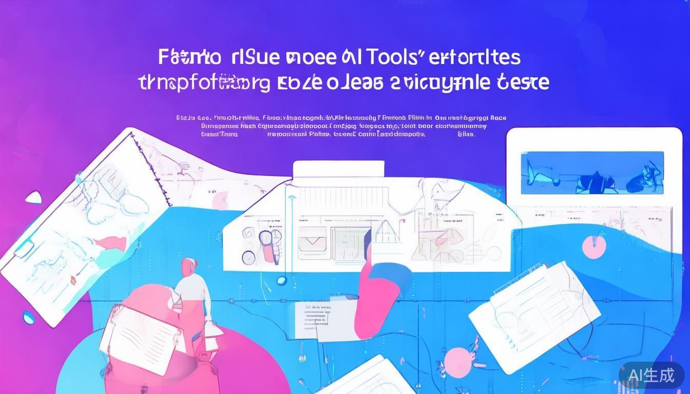

5个免费AI工具救了我大学4年：从期末3天突击80+到本科发2篇普刊，绩点从2.3冲到3.8
开头
临考前3天对着几百页PPT两眼发黑，写课程论文凑不出3000字，找导师要科研方向连文献都读不完，绩点一度卡在2.3差点延毕？我靠5个全免费的AI工具，没花一分钱补课费，3年时间把绩点拉到3.8，本科阶段发了2篇普刊，今天把全流程玩法拆给你。
1. 期末突击：用Kimi搭「考点压缩知识库」，3天啃完一学期内容

很多人用AI复习只会让它“划重点”，最后拿到的内容跟教材目录没区别，根本记不住。我用的方法是把一学期的课件、老师划的范围、往年真题全丢进Kimi长文本框（目前支持200万字上下文，以官方最新规则为准），直接给它固定提示词，10分钟就能生成可直接背诵的考点清单。
你是我的期末专业课助教，我上传了这门课的全部课件、近3年真题、老师最后一节课划的重点范围，请你完成3件事：
1. 按照真题出现频率排序考点，考频≥3次的标【必考】，1-2次的标【高频】，没考过但在重点范围里的标【了解】
2. 每个考点直接给“采分点关键词+1句答题套话”，不要冗余解释
3. 最后出3套模拟卷，所有题目从高频考点里出，附踩分点标准答案我去年考传播学概论，3天时间就背这个生成的清单，最后考了87分，比泡了1个月图书馆的室友还高5分。要注意：生成的考点一定要对照老师最后一节课的PPT核对，万一AI漏了老师特意强调的超纲考点，别直接拿来就背。
2. 作业/课程论文：用秘塔AI搜索搭「无编造成分」的文献框架，零引用错误
之前写课程论文我最头疼的就是找文献，知网翻一下午凑不出10篇参考文献，AI写的内容还经常编不存在的论文，被老师打回来重写是常事。后来我直接用秘塔AI搜索的「学术搜索」模式，输入论文主题，它会直接筛选知网、万方、arXiv的真实文献，所有引用都标清楚来源，根本不会出现编假文献的问题。
我一般会让它先输出三级框架，每个论点下面直接附3-5篇可直接引用的文献片段，连参考文献格式都按GB/T 7714标准排好，我只需要把自己的调研数据、观点填进去就行。之前写《短视频对大学生消费行为的影响》的课程论文，从找资料到写完4000字只用了4个小时，最后拿了92分，还被老师当成范文在年级群里转发。
| 论文写作环节 | AI使用边界 | 绝对不能让AI做的事 |
|---|---|---|
| 框架搭建 | 帮你梳理领域研究脉络，补全你没想到的研究角度 | 直接照搬AI给的题目，完全不结合课程要求 |
| 文献综述 | 帮你整理不同文献的核心观点，归类研究分歧 | 直接复制AI写的综述，不核对原文内容 |
| 降重润色 | 帮你把不通顺的句子改得符合学术表达，调整重复率 | 让AI替你写核心论点、编造调研数据 |
这里要划重点：所有AI生成的引用内容，一定要点进来源链接核对原文，避免AI断章取义，要是引用了跟原文观点相反的内容，答辩的时候很容易被老师问住。
3. 代码/高数类作业：用豆包AI解题「搞懂逻辑，不是直接抄答案」
我这种高数、编程基础差的文科生，之前写Python作业、做高数习题，对着题目盯1小时都不知道从哪下手，抄同学答案又怕被老师查重抓出来。后来我用豆包的「解题模式」，不是直接要答案，而是让它“只给解题步骤提示，每一步留一个我要自己算的空，等我算完再给下一步的对错反馈”。
比如做高数极限题，它不会直接给我最终结果，第一步先提示我“这个题是0/0型，可以先考虑洛必达法则，或者等价无穷小替换，你先试试把sinx替换成x，看看能不能化简”，等我把化简后的式子发过去，它再告诉我下一步怎么走。写代码作业也是一样，它会先告诉我“这个功能需要先调用pandas库读入数据，再做缺失值处理，你先写读入数据的代码，我帮你看有没有错”。
用这个方法我不仅作业没挂过科，还把之前落下的高数、Python基础补上来了，去年计算机二级考试准备了2周就拿了良好。千万不要直接让AI给完整答案抄，不然期末上机考试的时候，对着题目啥都不会，挂科的还是自己。
4. 科研入门：用ChatGPT 3.5（免费版）拆文献，一周读完20篇领域核心
大一下学期我进导师课题组的时候，第一次拿到20篇CSSCI文献，读了3天连研究问题都没搞懂，被导师骂“读文献不动脑子”。后来我用免费的ChatGPT 3.5做文献拆解工具，每篇文献先读摘要、结论、研究方法三个部分，把看不懂的专业术语、逻辑断点截出来发给它，让它用本科生能听懂的话解释，还让它帮我把每篇文献的核心观点、研究不足、可以延伸的方向列成表格。
| 文献拆解提问模板 | 输出效果 |
|---|---|
| 这篇论文的研究问题是什么？跟同领域其他研究比，创新点在哪？ | 100字以内讲清核心贡献，不用啃完整篇几万字的内容 |
| 这篇论文用的研究方法有什么局限性？如果我要做 follow 研究，可以从哪几个角度调整？ | 直接给你可落地的科研选题方向，不用自己瞎想 |
| 把这篇论文里提到的跟XX主题相关的所有观点整理成条目，标清楚页码 | 写综述的时候直接用，不用反复翻PDF找内容 |
我第一篇普刊的选题，就是读文献的时候AI给提的方向：之前的研究都是讲短视频对消费的整体影响，很少关注下沉市场大学生的群体差异，我就顺着这个方向做了300份问卷，写了3个月就中稿了。这里要提醒：涉及到前沿研究、最新发表的文献，AI可能会因为训练数据截止时间的问题出现信息偏差，所有内容一定要核对原文，以期刊发表的原文为准。
5. 答辩/汇报：用通义千问生成「逐字稿+突发问题预案」，再也不卡壳
我之前上台汇报就紧张，经常讲一半忘词，被老师问个问题就大脑空白。后来每次汇报、答辩前，我都会把做好的PPT转成PDF上传到通义千问，让它做两件事：第一，按照每页PPT的内容，生成3分钟/5分钟/10分钟三个版本的逐字稿，语言要口语化，不要太书面；第二，列出答辩老师可能会问的20个问题，每个问题给100字以内的回答思路。
比如我上次开题答辩，老师问“你这个样本量为什么选300份，能不能支撑你的研究结论？”，这个问题正好在AI给的预案里，我直接按照准备好的思路回答：“我参考了同领域同主题的硕士论文样本量设置，同时根据问卷有效回收率80%的预估值，最终发放375份问卷回收有效样本302份，满足回归分析的样本量要求”，当时答辩老师还点头说我准备得很充分。
我还会用它的语音模拟答辩功能，对着电脑把逐字稿讲一遍，它会帮我挑出来哪里卡壳、哪里讲得太快、哪里逻辑不通，练个3遍就能脱稿讲，根本不用背好几天。
行动清单
- 今天就把这学期要考的1门核心课的课件、往年真题整理好，丢进Kimi生成第一版考点清单，花20分钟核对完老师划的重点，先把【必考】考点标出来。
- 下次写课程论文的时候，先打开秘塔学术搜索，输入主题先攒够10篇真实参考文献，搭好三级框架再动笔，不要上来就瞎写。
- 这周做高数/编程作业的时候，试试“AI给步骤提示、自己算结果”的模式，别直接抄答案，搞懂1道题比抄10道题有用。
- 如果你已经进了课题组，今天选1篇你读了一半没读懂的核心文献，用ChatGPT拆成核心观点、研究不足、可延伸方向三个部分，半小时就能读完。
- 下次班级汇报/答辩前3天，把PPT上传到通义千问生成逐字稿和20个预设问题，对着练2遍，上台绝对不卡壳。
*本文为AI生成内容，所有工具功能以官方最新版本规则为准，建议所有AI生成内容均经过人工核对后再使用，避免出现事实错误。
出处声明：本页内容为白驹全局大脑 AI 生成整理，信息以官方为准；引用遵循原始许可，不侵犯原作者权益。发布时间 2026-08-30。
出处声明：本页内容为白驹全局大脑原创，或已标注引用来源；改编内容遵循原始项目许可证（如 MIT / CC），不侵犯原作者权益。若引用内容涉及版权问题，请联系我们更正。
出处声明：本页内容为白驹全局大脑原创，或已标注引用来源；改编内容遵循原始项目许可证（如 MIT / CC），不侵犯原作者权益。若引用内容涉及版权问题，请联系我们更正。